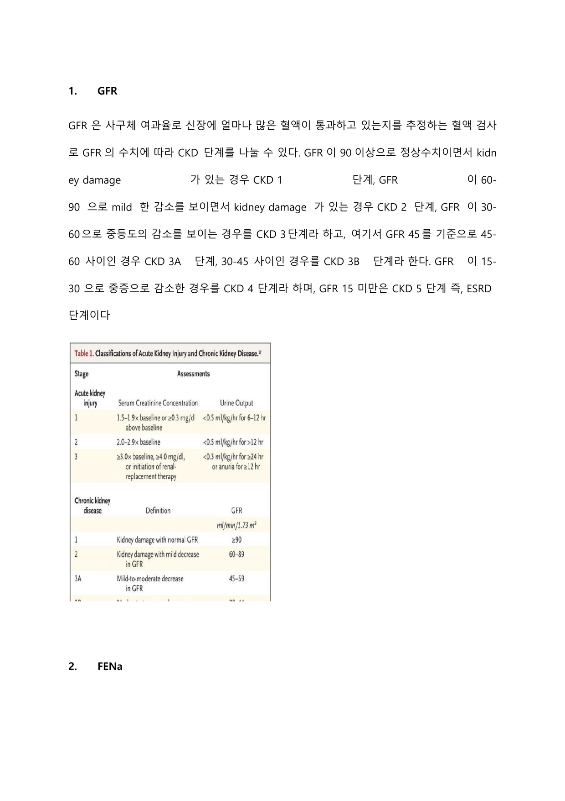
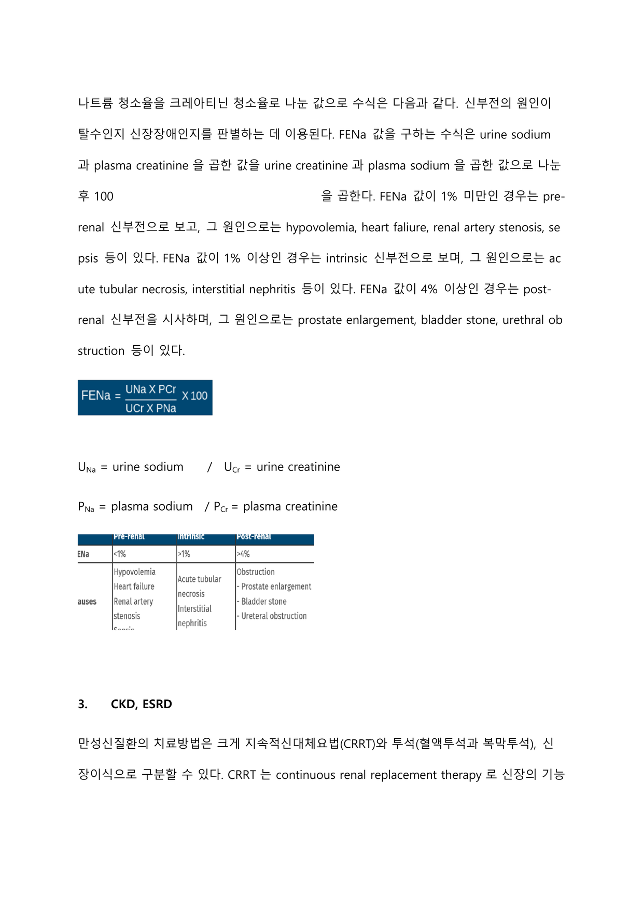
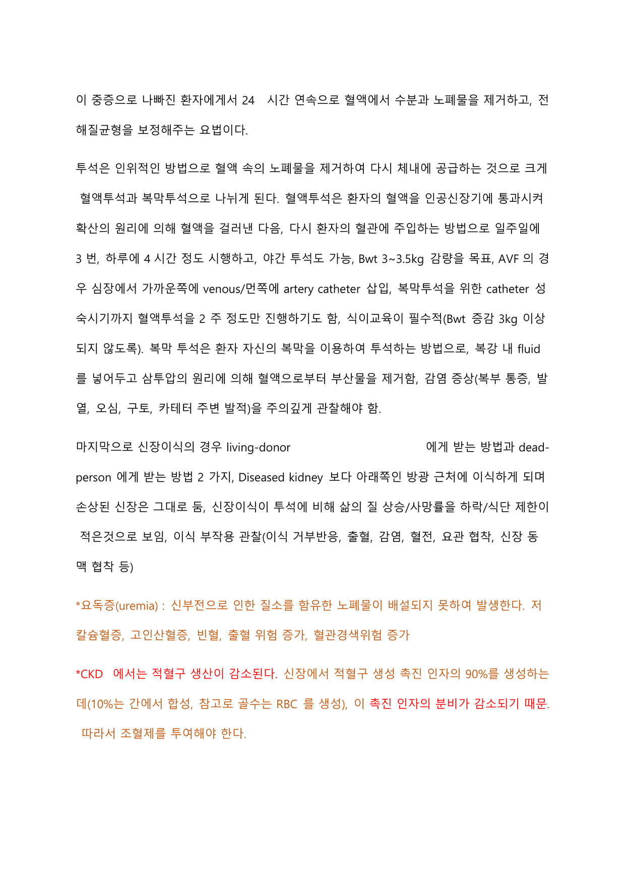
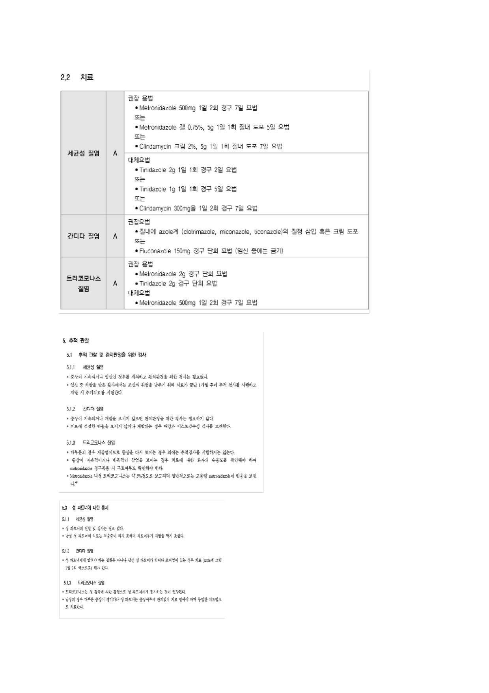
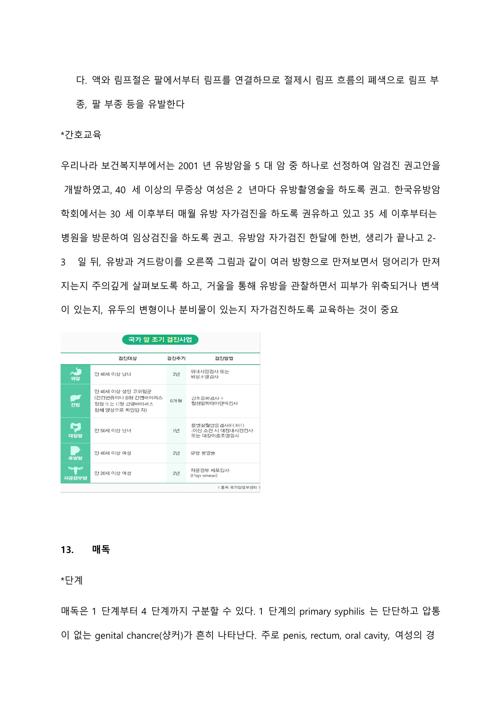

신장·비뇨·생식기계
신장 기능 평가(GFR·FENa)와 급·만성 신부전 관리(CRRT·투석·고칼륨혈증)부터 남성·여성 생식기계 종양 및 성전파성 감염까지 다루는 계통이다.
1 GFR 사구체 여과율
GFR(사구체 여과율)은 신장에 얼마나 많은 혈액이 통과하고 있는지 추정하는 혈액 검사로, 그 수치에 따라 CKD 단계를 나눌 수 있다.
환자의 GFR을 평가하기 위한 가장 적절한 검사는 urine creatinine clearance로, GFR과 세뇨관 기능을 반영하는 가장 의미있는 지표이다.
| 단계 | GFR(mL/min/1.73㎡) | 특징 |
|---|---|---|
| CKD 1 | ≥90(정상) | 정상이면서 kidney damage 동반 |
| CKD 2 | 60–90 | mild 감소 + kidney damage |
| CKD 3A | 45–60 | 중등도 감소 |
| CKD 3B | 30–45 | 중등도 감소 |
| CKD 4 | 15–30 | 중증 감소 |
| CKD 5(ESRD) | <15 | 말기신장질환 |

2 FENa 나트륨 분획배설률
나트륨 청소율을 크레아티닌 청소율로 나눈 값으로, 신부전의 원인이 탈수인지 신장장애인지를 판별하는 데 이용된다.
수식: (urine sodium × plasma creatinine) ÷ (urine creatinine × plasma sodium) × 100
| 신전성(pre-renal) | 신성(intrinsic) | 신후성(post-renal) | |
|---|---|---|---|
| FENa | <1%(원문 표시) | ≥1%(원문 표시) | 원문 표시 참고 |
| 주요 원인 | hypovolemia, heart failure, renal artery stenosis, sepsis | acute tubular necrosis, interstitial nephritis | prostate enlargement, bladder stone, urethral(ureteral) obstruction |

3 CKD·ESRD와 치료 CRRT, Dialysis, Transplant
만성신질환의 치료방법은 크게 지속적신대체요법(CRRT), 투석(혈액투석·복막투석), 신장이식으로 구분한다. 말기신장질환은 네프론 기능이 약 90% 소실되며, 정상신기능이 70% 이하이면 ESRD로 분류해 HD나 신이식이 필요하다.
- 요독증(uremia): 신부전으로 질소를 함유한 노폐물이 배설되지 못해 발생. 저칼슘혈증, 고인산혈증, 빈혈, 출혈 위험 증가, 혈관경색 위험 증가.
- CKD에서는 적혈구 생산이 감소한다. 신장은 적혈구 생성 촉진 인자(erythropoietin)의 약 90%를 생성하는데(70%는 간에서 합성, 골수는 RBC 생성) 이 인자 분비가 감소하기 때문이다. → 조혈제 투여 필요.
- 만성신질환의 가장 일반적인 원인은 조절되지 않는 DM이다.
- CRRT: 신장 기능이 중증으로 나빠진 환자에게 24시간 연속으로 혈액에서 수분·노폐물을 제거하고 전해질 균형을 보정. HD보다 혈류역동 상태를 상대적으로 적게 변화시킨다.
- 혈액투석(HD): 혈액을 인공신장기에 통과시켜 확산 원리로 거른 뒤 재주입. 주 3회, 1회 4시간 정도 시행(야간 투석 가능), Bwt 3~3.5kg 감량 목표. AVF는 심장에 가까운쪽 venous/먼쪽 artery catheter 삽입. 식이교육 필수(Bwt 증감 3kg 이상 되지 않도록).
- 복막투석: 환자 자신의 복막을 이용. 복강 내 fluid를 넣어 삼투압 원리로 부산물 제거. 감염 증상(복부 통증·발열·오심·구토·카테터 주변 발적) 주의 깊게 관찰.
- 신장이식: living-donor 또는 dead-person에게서 받음. diseased kidney보다 아래쪽 방광 근처에 이식하고 손상된 신장은 그대로 둔다. 투석에 비해 삶의 질 상승·사망률 하락·식단 제한이 적다.
- 혈액투석여과(HDF): HD에 여과를 더해 중분자 노폐물 제거에 효과적. 확산과 대류의 장점을 겸비, HD보다 저혈압 발생이 감소하고 심부담이 적다.
- erythropoietin 자극제(ESA): 만성콩팥질환·빈혈 환자에게 주사 투여. 부작용으로 고혈압·부종·메스꺼움·발열·현기증, 정맥혈전색전증 위험. 혈액세포 수를 주기적으로 감시.
- CKD 진단에는 소변 알부민/Cr 비율 확인: 30mg 미만 정상, 30~299mg 미세알부민뇨, 300mg 이상 거대알부민뇨.
- 신장으로 유입되는 혈액량은 심박출량의 20~25%이며 매일 약 180L의 혈액을 여과한다.
이식 부작용 관찰: 이식 거부반응, 출혈, 감염, 혈전, 요관 협착, 신장 동맥 협착 등.

4 급성신부전과 신전성/신성/신후성 구분 AKI
- 신전성(prerenal): 탈수·화상·출혈 등 순환혈액 감소로 신장관류가 감소해 발생. 세뇨관은 손상되지 않아 나트륨 흡수가 가능하고 소변은 농축(높은 요 삼투압, 낮은 요중 나트륨). BUN/Cr 비율이 20.7보다 높다. prerenal azotemia는 종종 급성요세관괴사(ATN)로 이어진다.
- 신성(intrarenal): BUN/Cr 비율이 20.7보다 낮다. 조영제로 인한 신손상은 intrarenal 손상이다.
- 신후성(postrenal): 소변 흐름의 방해로 발생. BUN이 Cr에 비해 눈에 띄게 증가한다.
- 급성신부전은 대사성 산증의 결과로 Kussmaul 호흡이 예상되며, 보상기전으로 과도한 이산화탄소를 호기한다.
- 이뇨기(7~14일)에는 3~6L/일의 다뇨로 Na 배설이 늘어 저나트륨혈증·저칼륨혈증 위험.
- BUN/Cr 정상범위: BUN 5~20mg/dL, Cr 0.6~1.5mg/dL, BUN/Cr ratio 10~20.7.
- 신장의 기능을 간접적으로 가장 잘 확인하는 것은 혈압(심박출량을 간접 반영). 신장은 휴식기에도 심박출량의 20~25%를 받는다.
- 신장 허혈성 손상은 40시간 이상 지속적으로 평균동맥압 60mmHg 이하인 경우 시작될 수 있다(단순 소변량 감소만으로는 단정 불가).
- CKD 환자가 폐색전증 의심 시 조영제 CT 불가하므로 ventilation-perfusion scan(핵의학 검사) 시행.
- Furosemide: 헨레고리 상행각에서 나트륨·수분 재흡수를 감소시킨다.
- mannitol: 수분을 세뇨관으로 끌어당기는 삼투압 제제.
- 다발성 장기 손상에서 신기능 손상 의심 시 가장 적절한 중재는 CRRT.
5 신증후군 Nephrotic syndrome
콩팥 손상으로 소변으로 단백질이 빠져나가고 부종이 발생하는 일련의 증상. 하루 3.5g 이상의 단백뇨, 알부민 3.0 이하, 부종이 발생하는 신사구체질환이다.
사구체 여과기관 손상으로 알부민이 배설되어 단백뇨가 나타나고 혈청 알부민이 감소한다. 혈액 교질삼투압이 감소해 혈관에서 체액이 빠져나와 부종이 생기고, 저알부민혈증으로 고지혈증이 동반된다. 신기능은 대개 정상이나 급성 세뇨관 괴사 시 급성 신부전으로 진행 가능하다.
적정량의 단백질 섭취가 중요하며(단백질 분해 후 요소가 신장에 부담), 고지혈증 위험을 낮추기 위해 동물성 지방이 함유된 음식은 제한한다.
6 고칼륨혈증 Hyperkalemia
혈중 칼륨 농도가 5.5mEq/L보다 높은 경우. 6.0mEq/L 이상이면 ECG 변화가 두드러진다.
콩팥기능 상실, 산증, 인슐린 감소, 광범위한 세포손상, 오래된 혈액수혈·용혈성 빈혈 등. (반대로 저칼륨혈증은 이뇨제 남용, 인슐린 투여, 만성적 구토, 관장 등으로 유발)
근력 저하, 감각이상, 부정맥, 의식 저하. 심전도상 T파 상승(tented T), P파 작아지거나 소실, PR 간격 연장, 넓은 QRS, ST 상승 소견.
크게 세 가지로 구분한다.
- 1) 심근 안정화(부정맥 예방): Ca gluconate 1 amp IV slowly — 넓은 QRS 등 이상 시 투여, 세포막 흥분 억제·심근 안정화.
- 2) 세포 내로 칼륨 이동: Regular insulin 10~20unit + D50W 50mL IV bolus(저혈당 예방 위해 포도당 동반, 투약 후 혈당 체크) / Sodium bicarbonate(대사성 산증 동반 시 사용) / Albuterol 10~20mg nebulized(베타2 효능제).
- 3) 체내 칼륨 제거: Kalimate enema(약 20g을 NS/포도당 100~200mL에 mix해 관장 → 장내에서 Na와 K 교환되어 대변으로 배설) / NS + loop 이뇨제(Lasix 20~40mg)로 소변 배설(신·심부전 환자는 신중) / 혈액투석.
7 전립선암 Prostatic cancer, TNM, Gleason score
TNM 분류: 종양 크기/침범, 림프절 전이, 원격 전이 정도로 분류.
| 병기 | 의미 |
|---|---|
| T0 | 종양의 징후·증거 없음 |
| T1 | 임상적으로 종양 발견 안 됨 / DRE로 detect 안 됨 |
| T2 | 전립선 내로 종양 국한 |
| T3 | 전립선 밖으로 확장 |
| T4 | 방광·직장 등 근처 구조물 침범 |
N0(림프절 전이 없음)/N1(전이 있음), M0(원격 전이 없음)/M1(원격 전이 있음).
Gleason score: 암 조직 분화 정도와 세포 특성으로 예후 예측. 분화 좋은 1등급~분화 나쁜 5등급까지, 가장 많은 형태와 두 번째로 많은 형태의 등급을 합한 값. 6점 이하는 분화도 좋아 예후 양호, 7점 이상은 주변 침범·림프절 전이 등 예후 불량. (Gleason 2–4=G1, 5–6=G2, 7–10=G3-4) 현미경 조직 구조 판독이라 주관적이라는 단점.
- 수술적치료: 종양절제술 또는 근치적 전립선 절제술(전립선·정낭·정관·주변조직·골반 림프절 제거), 최근 복강경 이용. 완치 기대 가능하나 출혈·수술부위 감염·요로 감염 등 합병증.
- 방사선치료(국소), 항암요법(cyclophosphamide 주로 사용).
- 호르몬 요법(전이 시): 남성호르몬이 암세포 성장을 촉진하므로 호르몬 생성 차단/기능 억제. ADT(androgen deprivation therapy)는 안드로겐을 억제·고갈시켜 종양 성장 저해. 부작용으로 여성형 유방, 발기부전, 골다공증, 우울 등.
- immunotherapy, 표적치료 등.
8 방광암 Bladder cancer
가장 일반적인 관련요인은 흡연력. 방광암 진단 환자의 50% 이상이 흡연력을 가진다.
초기 증상은 무통성 혈뇨이며, 혈뇨는 처음에는 간헐적이다. 진행되면 배뇨장애를 동반한 혈뇨·빈뇨. 방광암 덩어리는 촉진되지 않는다.
방광염·사구체신염·신우신염은 주로 발열을 동반하나, 발열 없이 하복부 통증과 혈뇨를 보이면 복부나 방광 손상을 의심한다. 방광 손상은 횡격막신경 자극으로 어깨로 방사되는 통증이 있을 수 있다.
9 전립선비대증 BPH
빈뇨, 야간뇨, 긴박뇨, 배뇨시간 지연, 가늘어진 소변 줄기, 배뇨 곤란 등의 배뇨장애. 요로 폐색이 지속되면 요로 감염, 방광 결석, 신기능 상실, 신우신염 등이 초래된다.
- 증상·병력 청취, IPSS 점수, DRE, PSA 수치, 방광경, 경직장초음파, 잔뇨·요류 측정술, 소변 검사(요로 감염), 혈액검사(신기능).
- IPSS(international prostate symptom score): 지난 한 달간 잔뇨감·빈뇨·배뇨곤란 점수화. 총점 0~35점, 0–7 mild / 8–19 moderate / 20–35 severe.
- PSA(prostate specific antigen): 전립선 상피세포에서 생산되는 단백질, 정상 0~4ng/mL. 전립선 조직에 특이적이나 전립선암에 특이적이지는 않아 BPH·전립선염에서도 증가. 정확한 측정 위해 검체 채취 전 24시간 사정 피하고 DRE 전에 시행.
- DRE(직장수지검사): 전립선 후면을 만져 크기·모양·경화·압통 사정. 딱딱한 결절 시 암·염증·결석 의심, 추가 조직검사 필요. 50세 이상 남성에게 매년 권고하나 DRE만으로 조기 진단은 어렵다.
- 알파차단제: 전립선 평활근(방광 알파1 수용체)을 이완시켜 요로 폐색 완화. Doxazosin, tamsulosin, terazosin, alfuzosin 등. 복용 즉시 효과, 긴박뇨·야간뇨 호전. 부작용으로 어지러움·두통·기립성 저혈압. (tamsulosin은 말초혈관 확장으로 혈압을 떨어뜨려 고혈압 동반 노인에서 병용)
- 5-알파환원효소 억제제: 전립선 상피세포 세포사 유발로 크기 감소. Avodart, finasteride 등. 부작용으로 발기부전·성욕감소(중단 시 대부분 회복).
- PDE5 효소억제제: 전립선 혈액량 증가로 증상 개선. Tadalafil 등. 니트로글리세린 등 혈관 확장 약물 복용 중인 환자는 복용 불가, 심혈관계 질환자 주의.
- 수술: 경요도전립선절제술(TURP), 최근 레이저로 비대 조직 기화(출혈·부종 최소).
빈뇨·야간뇨 등 배뇨장애 증상 교육, 암이 아님을 이해시킴, 야간뇨 시 늦은 오후·밤 수분 섭취 제한, 카페인·알코올 줄이거나 피함, 이뇨제 등 배뇨에 영향 주는 약물 복용 시간 조정, 배뇨 후 잔뇨감·점적 시 double voiding 권장.
10 HPV 백신접종 HPV vaccination
인유두종바이러스 감염 예방 백신. HPV는 자궁경부암의 주 원인이며 국내에는 2가·4가·9가 백신 3가지가 있다.
- 서바릭스(2가): HPV 16, 18 예방
- 가다실(4가): HPV 6, 11, 16, 18 예방
- 가다실9(9가)
HPV에 노출되기 전(성경험 이전) 접종이 가장 효과적. 이상적 접종 연령 9~13세, 26세까지 권고. 국내는 만 12세 여아 대상 국가예방접종(무료 2회, 2가 또는 4가).
11 질염 Vaginitis
질이 붓고 가려운 염증 상태로, 원인에 따라 세균성·칸디다·트리코모나스 질염 등으로 나뉜다.
| 세균성 질염 | 칸디다 질염 | 트리코모나스 질염 | |
|---|---|---|---|
| 원인균 | Gardnerella, Mobiluncus 등 과증식, lactobacilli 감소 | 90% 이상 Candida albicans | Trichomonas vaginalis |
| 분비물·증상 | 성관계 후 심한 비린내, 희거나 회색 분비물, 무증상 多 | 덩어리진 흰색(우유모양) 분비물, 통증·가려움·쓰라림 | 거품 있는 흰색/노란색 분비물, 심한 악취, 외음부 가려움, 자궁경부 딸기모양 홍반 |
| pH | 4.5 이상 | 4.5 미만 | 4.5 이상 |
| 현미경(wet mount) | clue 세포 | yeast | 움직이는 편모원충 |
| 치료 | Metronidazole 경구/질내, Clindamycin 크림 | azole계 질정·크림, Fluconazole 경구 단회(임신 중 금기) | Metronidazole, Tinidazole 경구 |
- pH 검사: 4.5 이상이면 세균성/트리코모나스, 미만이면 칸디다 시사.
- 습식도말검사(wet mount): clue 세포→세균성, yeast→칸디다, 편모원충→트리코모나스.
- KOH 검사(whiff test): amine 냄새 양성 → 세균성 질염.
- 그람염색: 그람음성균→세균성, 이스트→칸디다.
- 핵산증폭검사: 트리코모나스 질염 진단에 특이도 높음.

12 자궁경부암 Cervical cancer
원주상피와 편평상피가 만나는 원주상피 접합부(변형대)에 암이 발생하는 것으로, 편평세포암이 가장 흔한 형태이다.
주로 인유두종바이러스(HPV), 특히 HPV 16, 18이 고위험. 성관계로 전파되는 성전파성 질환. 보통 HPV DNA는 6–12개월 유지 후 자연 소멸하나, 16·18형은 오래 유지되어 약 70% 이상에서 암으로 진행한다. (CIN: 자궁경부 상피내 종양, 이형성 전암성 병변, 1~3단계, CIN 3은 상피내암)
- PAP smear(선별검사): 자궁경부세포 이형성 확인. 권고안상 20세부터 약 74세까지 3년마다(이상 시 더 자주).
- 질확대경검사(colposcopy): PAP 결과 비정상일 때 병변 부위를 확대 관찰, 조직검사·치료 시행. 병적 변화 관찰 시 조직 생검으로 확진.
- Cryotherapy(냉동요법): 세포 내액 crystallization으로 괴사 유발해 상피 표면층 파괴. 마취 불필요, 안전·효과적.
- LEEP: 와이어 루프로 전체 변형대 제거, 제거 조직으로 진단·치료 모두 가능, 쉽고 신속.
13 자궁내막증 Endometriosis
자궁내막에서 관찰되는 선·간질조직이 인접 장기, 복막, 난소 등 자궁 외 부위에 존재하는 것.
원인은 불분명하나 3가지 가설: ① 전이(억류)가설(월경이 난관 통해 역류, 나팔관에서 복강으로 자궁내막 유출 후 이식), ② 화생가설(복막강·골반 중피 내막이 자궁내막 형태로 변화), ③ 혈관성·림프성 파종.
증상만으로 진단 어려움. 생리·성교·배뇨 시 통증, 골반통.
질식 초음파(민감도·특이도 비교적 높음) 기본, 골반·복부 MRI 추가. 혈액 검사로 종양표지자 CA-125(난소암·자궁근종·임신 초·월경 기간 중에도 증가 가능). 복강경/자궁경 수술로 조직 채취해 진단.
- 수술치료: 복강경·자궁경 수술로 조직검사와 동시에 병변 제거.
- 내과적치료: 생식샘자극호르몬 분비호르몬 작용제(지속 복용 시 음성 되먹임으로 FSH·LH 분비 억제 → 에스트로겐 감소 → 자궁내막 위축·무월경), 복합 경구 피임제(에스트로겐 억제·무월경 유도). 보통 3개월 이상 치료기간 필요.
14 유방암 Breast cancer
유방의 도관과 소엽 상피에서 발생하는 악성 종양. 발생부위에 따라 관암종/소엽암종, 침윤 유무에 따라 상피내암/침윤성암으로 나뉜다(DCIS, LCIS, 침윤성 유관암, 침윤성 소엽암).
- BRCA 유전자 돌연변이: 종양억제유전자로, BRCA-1, 2 이상으로 돌연변이세포 DNA 교정에 이상이 생겨 암세포 활성화. 유방암·난소암 위험 증가. 암 재발·진행 감시 목적으로 시행.
- 에스트로겐 장기간 노출: 이른 초경, 늦은 폐경, 무자녀·늦은 임신, 분유수유, 에스트로겐 투약 등.
- 기타: 가족력, 비만, 높은 유방 밀도, 30세 이하 흉부 방사선 치료력 등.
- 수술, 항암, 방사선요법, 최근 호르몬 요법·분자표적치료.
- 호르몬 요법: ER/PR에 에스트로겐·프로게스테론이 결합하면 성장 촉진되므로 이를 억제·차단. 타목시펜(에스트로겐 수용체에 결합 차단), SERM(유방에서는 차단, 뼈에서는 자극해 골밀도 유지), LH-RH agonist(에스트로겐 감소).
- 분자표적치료: 전이성 유방암의 약 25~30%에서 HER2 과발현(재발 빠르고 생존기간 짧음). HER2 신호 차단 단일클론항체 Herceptin이 대표적. 단일요법 또는 세포독성 항암제와 병용.
감시림프절(sentinel LN): 종양에서 림프액을 받는 첫번째 림프절. 감시림프절 생검 결과에 따라 수술 시 림프절 절제 여부 결정. 액와 림프절은 팔에서부터 림프를 연결하므로 절제 시 림프 흐름 폐색으로 림프부종·팔 부종 유발.
40세 이상 무증상 여성은 2년마다 유방촬영술 권고(보건복지부). 한국유방암학회는 30세 이후 매월 유방 자가검진, 35세 이후 임상검진 권유. 자가검진은 한 달에 한 번, 생리가 끝나고 2~3일 뒤, 유방·겨드랑이를 여러 방향으로 만지고 거울로 피부 위축·변색·유두 변형·분비물 관찰.

15 매독 Syphilis
- 1기(primary): 단단하고 압통이 없는 genital chancre(하감)가 흔히 나타남. 주로 penis, rectum, oral cavity, 여성은 cervix. 통증이 없고 발견 어려운 곳에 위치해 치료가 지연될 수 있다.
- 2기(secondary): 세균이 혈액 따라 전파되어 전신 증상. 분홍색 구진성 병변, 생식기 점막의 작고 무증상의 얇은 궤양, 림프절 비대.
- 3기(latent): 2기 병변이 보통 3개월 이내 소멸하고 면역 체계가 억압해 징후·증상이 없는 잠복 매독으로 이행. 궤양이 남으면 감염 전파 가능.
- 4기(late stage): 초기감염 후 대략 10년 이후, 가장 치명적. 뇌·신경·심장·혈관·뼈 등 여러 장기에 영향(cardiovascular syphilis, neurosyphilis). 앞선 단계에서 항생제 치료 가능해 요즘은 드묾.
페니실린 주사 1회 근주, late syphilis는 3주 동안 주 1회 근주. 페니실린계 알러지 시 doxycycline, ceftriaxone, azithromycin 치료.
16 HIV/AIDS CD4, 기회감염
전파경로: 혈액·정액·질 분비물 등 체액, 감염된 혈액 수혈, 감염자 체액 접촉, 질 분만, 모유수유 등(예: 상처 있는 손에 환자 체액이 묻는 경우).
- 1단계: 미열·피로·근육통·인후통 같은 경미한 감기 증상.
- 2단계: 잠복기, 림프절병증·림프절 비대.
- 3단계: 면역결핍 명확, 소화기관·신경계·이차감염·악성종양 등.
이차감염은 흔하고 사망의 선행요인. 곰팡이균 Pneumocystis carinii(PCP)는 심각한 폐렴을 일으키는 사망 주요 원인이다.
- 진단 시 투베르쿨린 skin test 또는 IGRA. IGRA(잠복결핵검사, 인터페론감마 분비검사)는 혈액을 결핵균 특이항원으로 자극 후 분비 인터페론감마 측정. 위양성률이 낮고 비용이 비교적 저렴.
- CD4 T cell 정상 수: 800~1200 cells/μL.
- HIV 감염 초기에는 CD4 T cell 수가 일시적으로 감소(타인 감염 위험 높은 시기). 무증상기 후 CD4 T cell이 200 이하로 떨어지면 면역력 저하·기회감염 발생 증가.
ART(항레트로바이러스제 치료): 병합 약물치료로 HIV 증식 억제. 유효성 평가 지표는 viral load 감소와 CD4 세포 증가. 승인된 약물 3가지 계열:
- 역전사효소 활동 억제: NRTIs, NNRTI, NtRTI.
- 단백질 분해효소 활동 억제: PI.
- 침투억제제: HIV가 CD4 수용기 부위와 결합하는 세포 내 침투 억제.
17 헤르페스 바이러스 Herpes simplex virus
HSV-1은 입술헤르페스, HSV-2는 성기헤르페스를 유발한다. 보통 아동기에 일차 감염되며 당시 무증상이나 구강주변 삼차신경절 등 신경조직에 잠복한다.
감염·외상·면역억제·스트레스 상황에서 재활성화되어 통증 있는 수포를 형성하고 궤양·가피를 형성. 재발이 특징적(평균 1년 1회 정도, 나이 들면서 빈도·중증도 감소). 단순 피부 접촉으로도 미세 피부손상 부위로 전염 가능.
보통 1~2주 내 치유되나 재발이 흔하여 acyclovir 같은 항바이러스제 사용.
18 횡문근융해증 Rhabdomyolysis
골격근이 손상될 때 혈중으로 방출되는 myoglobin과 CK가 신세뇨관을 폐색시켜 발생하며, 급성세뇨관괴사(ATN)를 초래할 수 있다.
짙은 홍차색 소변, myoglobin 검출, BUN/Cr 상승.
신장 세척을 위해 다량의 수액 요법을 시행한다.
19 SIRS vs Sepsis
| SIRS | Sepsis | |
|---|---|---|
| 특징 | 열, 빈맥, 때로 저체온을 동반하는 광범위 염증 | 감염이 동반될 때, 감염에 의해 발생하는 SIRS |
- 중증패혈증으로 수액요법 중인 환자의 평균동맥압이 정상보다 낮을 때 NE 투여 → 예상 효과는 혈관긴장도와 후부하의 회복. NE는 알파·베타 수용체 자극제로 심근수축력·HR 증가, MAP 증가.
- MAP 정상범위 80~180mmHg(원문 표기).
- 심한 탈수로 수액요법 시 중재가 효과적임을 나타내는 지표는 HR의 감소(체액량 감소 시 보상기전으로 빈맥·빈호흡·발한, 쇼크 징후로 핍뇨·말초청색증·의식저하). 초기에 보통 NS 처방.
20 산증·알칼리증 Acidosis / Alkalosis
| 대사성 산증 | 대사성 알칼리증 | |
|---|---|---|
| 원인 | 신부전(산 배설 감소), 쇼크·DKA·설사 등 장액 소실로 알칼리 소실, 케톤산·lactate 등 강산 증가 | 전해질 불균형(Lasix로 인한 K+ 결핍), 위 배액·구토로 인한 염소 소실 등 |
| 치료 | bivon(중탄산염) 투여, 케톤병 시 인슐린 및 수액요법 | 저칼륨혈증 등 전해질 교정, 수액 요법 |